보닛 위에 사람이 매달린 채 도로를 질주하는 흰색 차량
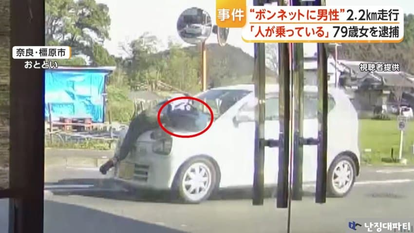
영상을 자세히 보면 피해 남성은 오른발을 보닛에 올린 채 오른 손으로는 가방으로 보이는 물건을 든 채 차량에 매달려 있음
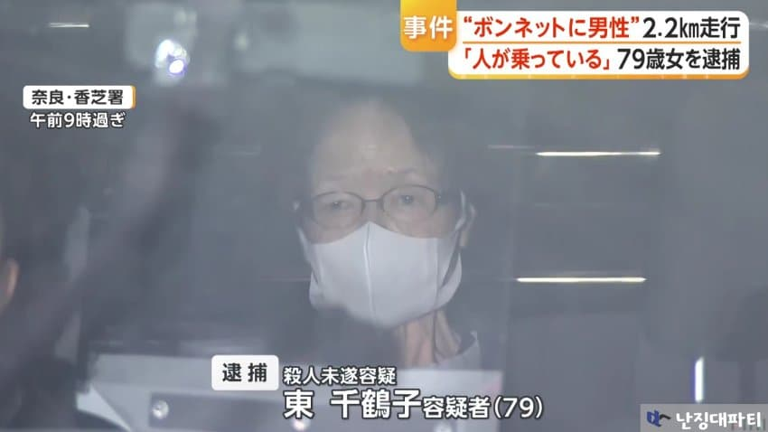
남성을 차량에 매단 채 질주해 살인미수 혐의로 체포된 건
일본 나라현 가시하라시에 거주 중인 스시녀
히가시 치즈코(79)
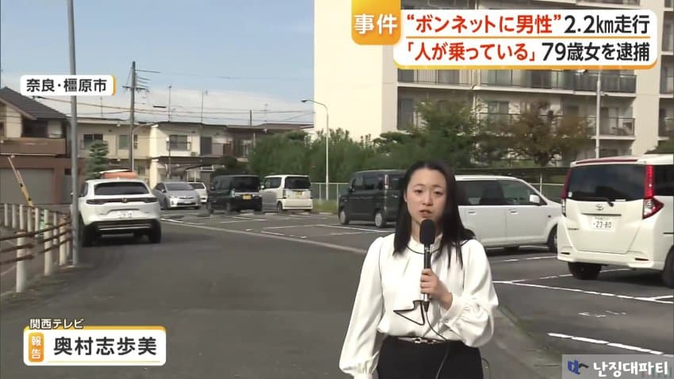
사건의 시작은 이곳
공동 주차장에서 벌어진 사소한 다툼이었음
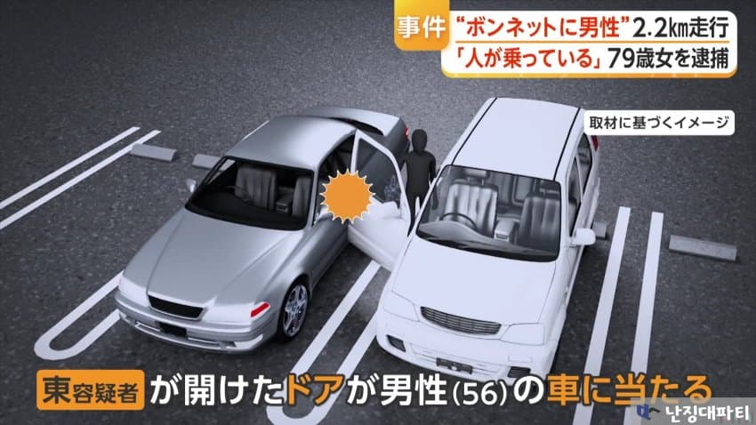
히가시 용의자는 본인 차량의 문을 열다가 옆에 주차되어 있던 56세 남성의 차량에 접촉하는 사고를 일으켰고
이 사실을 인지한 남성이 지적하자 히가시는 차를 그냥 출발시키려고 함
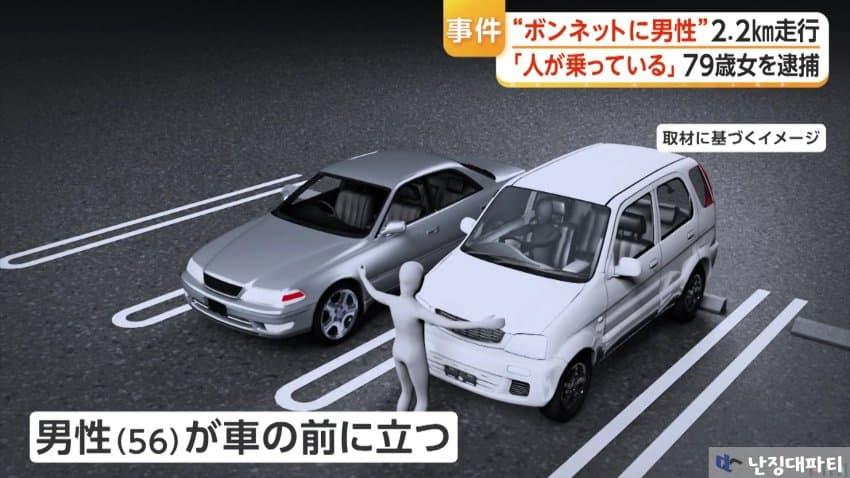
이를 막기 위해 피해 남성은 시가시의 차량 앞을 막아 섰지만
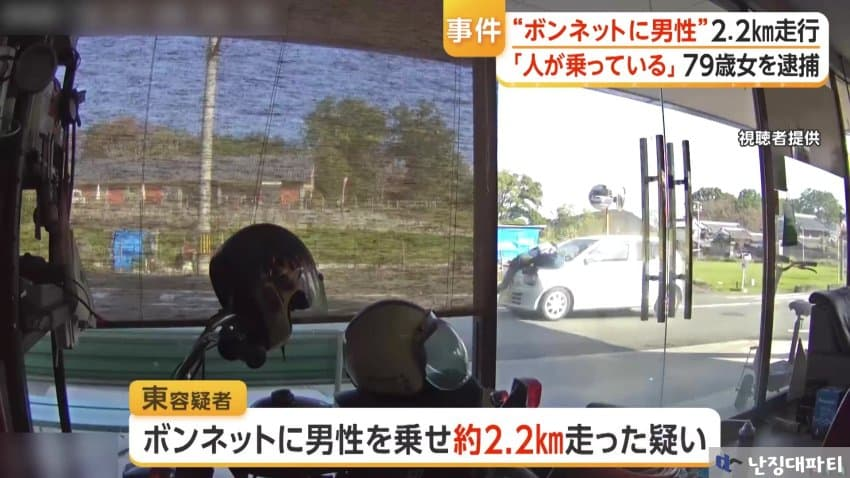
히가시는 아랑곳하지 않고 차를 출발해
보닛에 남성을 태운 채 약 2 2km를 달렸다고 함
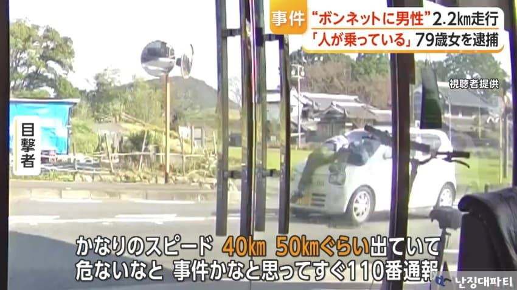
당시 비명을 지르며 매달려 가는 남성을 목격한 목격자에 따르면 속도는 시속 40~50km는 되어 위험한 상황이었다고 함
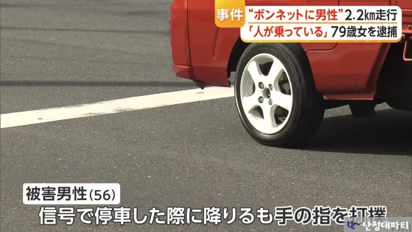
피해 남성은 신호 때문에 정차한 사이 차에서 내려 생명은 구했지만
필사적으로 버티는 동안 손가락 등에 타박상을 입는 등 부상을 당한 것으로 알려짐
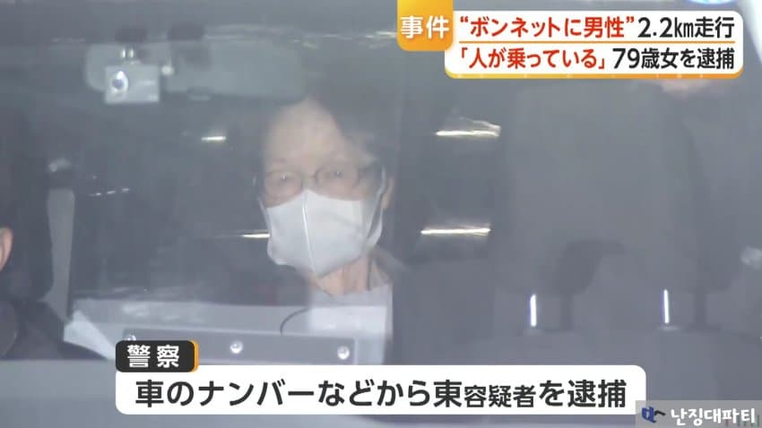
이후 피해 남성의 신고를 받은 경찰이 차량번호 등을 통해 히가시를 체포했는데
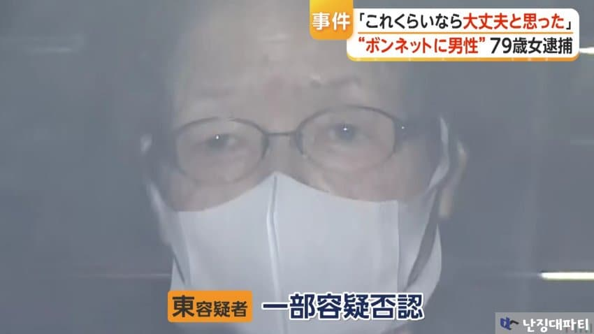
현재 히가시는 일부 혐의를 부인중임
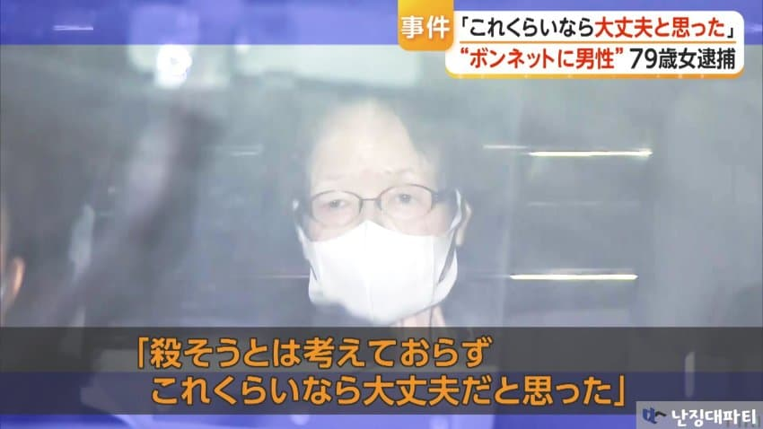
[히가시 치즈코(79)]
죽이려고 한 건 아니었고 이정도라면 괜찮을 거라고 생각했다
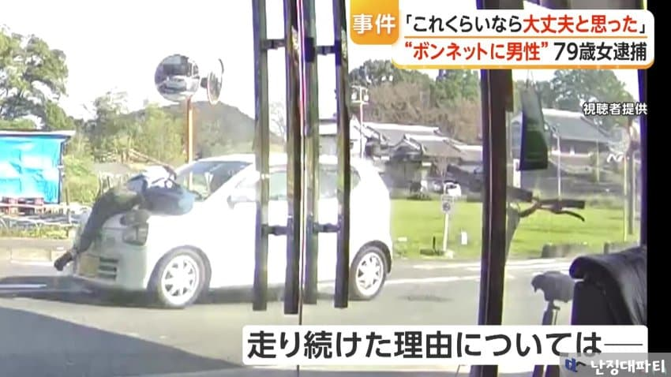
남성을 보닛에 매달고 계속 달린 이유에 대해서는 다음과 같이 설명함
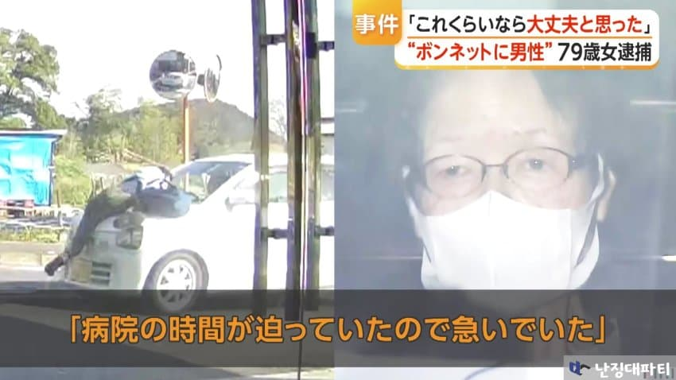
[히가시 치즈코(79)]
병원 예약 시간이 임박해서 서두르고 있었다
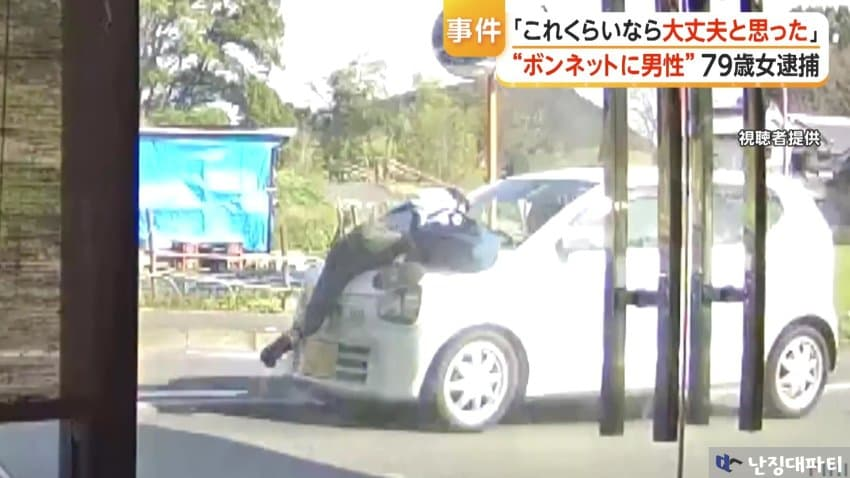
경찰은 사건의 자세한 경위를 수사중임
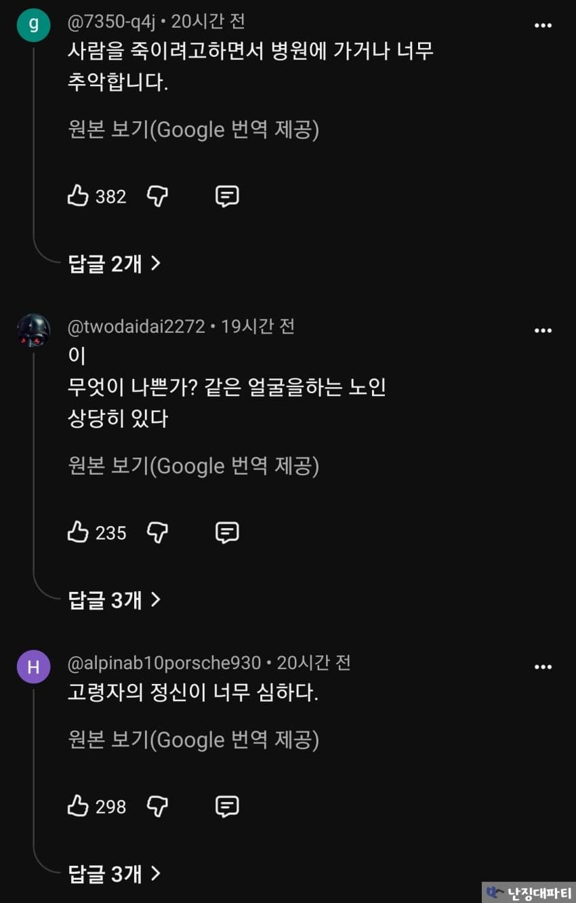
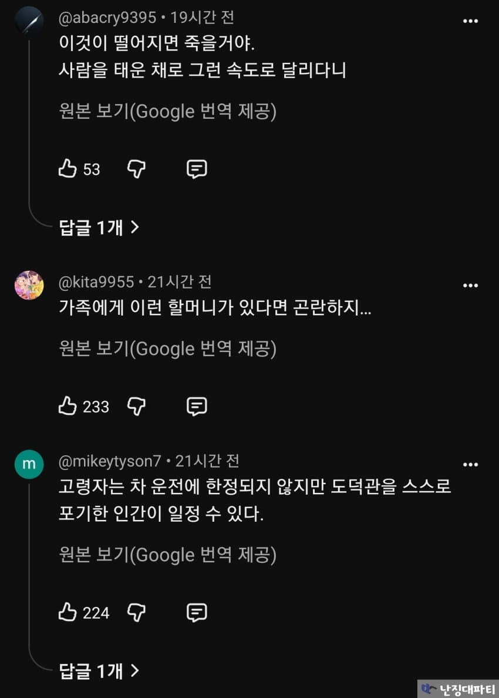
원종이들 쪽발이 교통매너가 어쩌고 저쩌고 스시녀가 어쩌고 저쩌고
평소에 쪽얼쪽얼 거리더니 이게 대체 뭐냐고...

일뽕은 정신병!
댓글
댓글 보관 대기 중입니다. 원문 응답 오류가 있으면 다음 실행에서 다시 수집합니다.